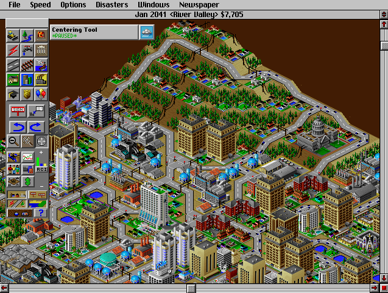

Orthographic Projection
Assignment Goals:
- Draw a 3d Stanford Bunny with an orthographic projection
- Create your own 3d model of a cube
- Rotate your models using rotation matrices
- Learn how three dimensional geometry can be stored using a list of vertices and lists of vertex indices
Instructions for you to follow in this document will be highlighted in blue.
Don't forget to cite your sources!
Introducing THREE.js
Complete the following:
- Start fresh from a new HTML template
- Add
<script src="https://trkern.github.io/three.js"></script> to the head of your document. This is a local backup I made of a third party library called THREE.js. This library provides a wide variety of tools for creating graphics in HTML.
You should never use products made by other people in production (this includes third party code, programming languages, compilers, and hardware). Without having a complete understanding of how the third party code works, it can introduce hard to diagnose bugs or even malicious code!
Other things you need to be concerned with when using other people's code:
- Licensing. THREE.js is provided under the MIT License, which allows you to redistribute the code, provided you include a copy of the license with the code. Always read the licenses for third pary software to determine what you are legally allowed to do.
- Updates. The THREE.js creator hosts a copy of THREE.js which is regularly updated as changes are made to the library. Most of these changes are backwards-compatible, but some aren't, so your code will eventually break if you rely on the hosted version. In this class, we will be using the THREE.Geometry class which is no longer supported by THREE.js.
- Downtime. The host may also experience downtime: I suggest you download a copy of THREE.js (from https://trkern.github.io/3d/three.js) to your computer. Place it in the same folder as your HTML files and replace
<script src="https://trkern.github.io/three.js"></script> with <script src="three.js"></script>, or you risk not being able to run your code.
For this project, you should only use the basic vector and matrix tools provided by the THREE.js library. We will use more advanced parts of the library to create 3d scenes later.
THREE.Vector3: a class for representing and manipulating 3d vectors
THREE.Matrix3: a class for representing and manipulating 3x3 matrices
The Stanford Bunny
For your convenience, I've copied the vertex and face data for a model of the Stanford Bunny from a 3d object file that I've simplified and cleaned up. This is roughly the format that the data was stored in in the file itself.
Copy the following code into the <script> section of your html document. Note that you'll need to create a different <script> element in your code from the one we used to include THREE.js. An individual <script> element can either copy in code from another document or contain its own Javascript code, but not both. When these variable declarations aren't inside functions, they become global variable declarations, so all of our functions will have access to bunverts and bunedges.
var bunverts = [[0.45, -2.75, 4.6], [-1.15, -2.8, 4.65], [-0.65, -3.15, 5], [-2.6, 2.75, -2.6], [-1.05, 2.55, -3.15], [-3.5, 3.7, -3.15], [-0.1, -1.1, -4.45], [-1.35, -0.15, -3.85], [0.3, -0.2, -4.1], [2.05, 0.9, -3.95], [1.25, 2, -4.1], [1.95, 1.3, -3.25], [-0.4, 0.05, -4.6], [-2.8, 4.3, 0.2], [-1.7, 3.55, -1.45], [-1.55, 2.45, -1.85], [2.05, -0.05, -3.35], [-1.45, 0.95, 1.25], [0.05, 1.1, 1.9], [-0.45, 0.8, -0.55], [-4.05, 3.8, -3.75], [0.85, 2.4, -2.3], [-0.95, 1.7, -1.85], [-1.4, 0.9, -1.85], [-0.15, 0.9, -1.5], [-1.35, -4.15, 4.2], [1.7, 0.55, -2.7], [2.2, -3.8, 1.1], [2.35, -3.1, 1.15], [2.05, -3.45, 1.95], [1.9, -4, 0.15], [1.55, -4.1, 2.15], [-2.5, -4.9, 2], [-2.9, -4.3, 0.1], [-3.1, -4.95, -1.45], [0.1, -4.05, 4.7], [0.15, -4.8, 3.2], [-1.7, -3.6, 3.5], [-2.4, -4.1, 2.65], [-1.25, -4.9, 2.4], [1.5, -0.15, 1], [0.75, 0.8, 0.6], [1, 0.3, 2.35], [1.55, -0.75, 0.55], [1.4, -1.3, -3.4], [1.15, -0.4, -3.3], [1.5, -0.8, -1.9], [0.9, 0.15, -2], [1.7, -1.5, -2.2], [-2.2, 3.05, -0.15], [-1.35, -3.35, -2.35], [-2.35, -2.35, -2.65], [-1.3, -2.5, -3.75], [1.9, -0.95, 1.6], [1.6, -0.85, 2.55], [1.5, -2.4, -1.55], [1.5, -2.15, -2.9], [2.3, -1.75, 1.75], [2.45, -2.35, 0.9], [-1.15, -1.75, -4.2], [0.15, -1.9, -4.25], [1.85, -4.8, -2.35], [1.2, -3.95, -1.8], [1.55, -4.75, -1.25], [0.9, -3.45, 3.6], [0.8, -4.2, 3.8], [-1.8, 2.9, 0.35], [-3, 3.65, 0.7], [0.7, 0.35, -0.8], [1.5, -1.15, -1.25], [1.4, -2, -0.75], [1.05, -3.6, -0.55], [1.6, -0.85, -0.4], [0.05, -4.9, -2.75], [-0.05, -4.15, -1.95], [0.85, -4.3, -2.85], [0.25, -2.6, 4], [2.25, -1.2, 0.15], [-3.85, 2.35, -2.9], [-4.95, 3.35, -2.6], [-4.35, 2.45, -3.15], [2.3, -1.95, -0.25], [2.1, -3.1, 0.15], [0.3, -1.4, 3.9], [1.05, 1.45, -2.65], [1.45, -4.75, 2.3], [-0.75, 2.65, -1.5], [-0.4, 2.55, -2.05], [-1.6, 4.25, -0.45], [0.65, 1.35, -2], [-1.2, 0.85, -4.3], [-0.1, 1.45, -4.4], [0.45, 0.5, -4.65], [1.85, -2, 2.7], [-0.95, -0.95, 3.95], [1.3, -1.5, 3.35], [-2.4, 4.05, 0.2], [2.15, -4.85, -0.35], [1.7, -3.35, 2.55], [-0.55, -3.55, -2.25], [-0.75, -4, -2.4], [2.2, -4.3, -0.5], [0.6, 0, 3.2], [0.9, -3.15, -2], [-1.65, 1.75, -2.75], [-0.95, -2.55, 4.05], [-2.25, -1.65, 3.45], [-2.45, -2.45, 3.05], [-2.7, -3.85, -0.5], [-3, -4.3, -1], [-0.1, -4.9, -0.65], [0.95, -4.85, -0.85], [-0.2, -4.7, -0.45], [-1.85, -0.4, 3.2], [-1.6, 1.8, -3.5], [-0.05, 2.2, -4.55], [-1.5, 2.35, -3.6], [-3.2, -1.25, 1.45], [-2.6, -0.95, 2.3], [-2.85, -3.65, 2.45], [-1.1, 2.45, -2.65], [-1.15, 0.4, 3], [0.65, -2.6, -3.6], [-2.1, -2.8, -1.8], [0.4, 2.65, -3.45], [-4.85, 4.2, -2.95], [-1.8, -1.4, -3.9], [0.1, -3.4, -2.35], [0, -3.6, -2], [-2.7, -1, -0.2], [-2.6, -1.6, -1.25], [-2.9, -2.1, -0.95], [-1.85, -3.8, -0.8], [1.45, 0.05, -4.55], [1.4, -4.9, -0.75], [1.25, -4.85, -2.95], [-2.45, -0.3, -0.35], [-2.45, -0.5, -1.4], [-3.55, -3, 0.05], [-3.4, -1.45, -0.45], [-0.8, -4.55, -3.35], [-1.9, -4.6, 1.5], [-0.95, -4.7, -0.65], [-1.5, -4.95, -3.25], [-2, -4.95, -1.9], [-1.55, -4.05, -2.15], [-3.85, 3.25, -3.35], [-1.6, 0.45, -0.45], [-2.8, 2.2, -3.45], [-2.3, 0.2, 1.55], [-2.05, -4.9, 1.85], [-2.4, -4.85, -0.9], [-2.55, -0.8, 1.45], [0.5, -4.95, -1.5], [-3.65, -1.85, 0.35], [-1.75, 0.35, -2.75], [-2.45, -0.7, -2.35], [-1.85, 0.65, -1.5], [1.15, -4.65, -0.5], [0.1, -4.85, -1], [-0.6, -4.95, -0.85], [-1.2, -4.7, -0.85], [-3.15, -2.7, 1.9], [-3.1, -3.9, 1.25], [0.4, -4.9, 1.65], [1.15, -4.95, 1.6], [0, -4.85, 1.7], [0.2, -4.9, 2.3], [1.45, -4.8, 0.55], [1.6, -4.9, 0.15], [0.85, -4.6, 1.6], [-0.5, -4.75, 0.9], [1.3, -4.9, 1.1], [-0.45, -4.9, 2.55], [-0.85, -4.8, 2.35], [1.1, -4.6, 0.85], [-0.95, -4.75, 1.65], [-0.25, -3.3, -3.15], [-0.3, -4.95, -2.15], [-1.3, -5, -1.35], [0.45, -4.9, -1.95], [1.25, -4.6, 0.35], [-1.5, -4.75, -1.05], [-0.95, -4.95, -1.15], [-0.65, -4.85, -1.8], [-0.45, -4.9, -1.25]];
var bunfaces = [[0,1,2],[3,4,5],[6,7,8],[9,10,11],[12,8,7],[13,14,15],[9,11,16],[17,18,19],[5,4,20],[10,21,11],[22,23,24],[1,25,2],[11,26,16],[27,28,29],[30,27,31],[32,33,34],[35,25,36],[37,38,39],[40,41,42],[40,42,43],[44,45,46],[45,47,46],[44,46,48],[41,19,18],[49,13,15],[50,51,52],[53,42,54],[48,55,56],[53,57,58],[59,6,60],[26,47,45],[58,57,28],[46,55,48],[61,62,63],[64,65,36],[66,67,49],[46,47,68],[47,24,68],[46,69,55],[46,68,69],[62,55,70],[62,71,63],[62,70,71],[69,70,55],[28,57,29],[69,68,72],[69,72,70],[73,74,75],[53,54,57],[72,68,41],[19,41,68],[64,76,0],[65,64,0],[43,72,40],[40,72,41],[77,53,58],[78,79,80],[81,58,82],[77,58,81],[43,42,53],[82,27,30],[27,82,28],[58,28,82],[83,76,64],[45,16,26],[11,84,26],[11,21,84],[35,2,25],[31,64,85],[86,87,88],[26,84,89],[90,91,92],[93,29,57],[84,21,89],[85,64,36],[26,89,47],[83,94,76],[0,35,65],[54,95,93],[89,24,47],[13,49,67],[66,86,96],[86,88,96],[97,30,31],[29,98,31],[50,99,100],[87,86,22],[93,98,29],[101,30,97],[93,95,64],[102,83,95],[98,93,64],[64,95,83],[54,102,95],[86,66,22],[24,89,22],[98,64,31],[31,27,29],[74,103,62],[104,3,78],[105,106,107],[108,109,33],[110,111,112],[39,38,32],[94,113,106],[90,92,12],[114,115,91],[114,116,115],[3,79,78],[117,106,118],[37,119,38],[105,94,106],[120,3,104],[115,10,91],[90,114,91],[37,107,119],[105,107,37],[74,73,100],[121,18,17],[96,67,66],[83,102,94],[89,21,22],[76,94,105],[0,2,35],[87,22,21],[52,60,122],[121,113,94],[1,0,76],[1,76,105],[123,51,50],[21,10,124],[4,124,116],[87,124,120],[68,24,19],[120,4,3],[87,21,124],[10,115,124],[120,124,4],[102,121,94],[96,13,67],[124,115,116],[5,125,79],[102,18,121],[96,88,13],[53,77,43],[22,49,15],[102,42,18],[5,79,3],[19,24,23],[126,6,59],[42,41,18],[5,20,125],[61,75,62],[127,103,128],[70,72,81],[55,62,103],[48,56,44],[71,82,30],[103,74,128],[20,4,116],[30,101,71],[72,77,81],[43,77,72],[129,130,131],[130,123,132],[63,71,101],[9,16,133],[70,81,71],[99,128,74],[81,82,71],[61,63,134],[135,75,61],[8,45,44],[6,44,60],[6,8,44],[136,137,130],[10,9,133],[136,130,129],[138,139,131],[88,87,120],[100,73,140],[60,44,56],[99,74,100],[141,142,112],[143,144,145],[20,146,125],[125,146,80],[91,10,92],[17,19,147],[138,131,108],[146,116,80],[74,62,75],[131,139,129],[146,20,116],[148,80,116],[108,132,109],[130,132,108],[118,106,113],[34,109,132],[148,116,114],[13,88,14],[14,88,120],[66,49,22],[17,136,149],[10,133,92],[140,145,100],[141,150,151],[59,60,52],[145,50,100],[126,7,6],[90,12,7],[104,22,120],[121,149,113],[139,117,152],[153,134,111],[139,154,117],[149,152,113],[155,156,157],[155,157,23],[136,17,147],[117,118,152],[152,118,113],[104,23,22],[157,156,137],[139,152,129],[19,23,157],[102,54,42],[149,121,17],[112,111,158],[159,110,160],[157,136,147],[157,137,136],[157,147,19],[155,7,156],[155,114,90],[155,90,7],[105,37,1],[25,1,37],[104,155,23],[130,51,123],[80,79,125],[156,7,126],[51,156,126],[37,39,25],[132,123,145],[132,145,144],[153,111,110],[54,93,57],[141,161,142],[107,162,119],[162,107,106],[132,144,34],[38,119,32],[106,117,162],[31,85,97],[59,52,126],[162,163,119],[163,33,119],[32,119,33],[162,138,163],[162,117,154],[14,120,15],[154,138,162],[22,15,120],[149,129,152],[163,138,33],[137,156,130],[145,140,143],[32,151,150],[33,109,34],[104,114,155],[123,50,145],[33,138,108],[51,126,52],[138,154,139],[130,156,51],[131,130,108],[153,110,159],[164,165,85],[166,164,167],[78,80,104],[80,148,104],[164,85,167],[97,85,165],[168,169,97],[165,164,170],[164,171,170],[168,97,172],[92,8,12],[173,167,36],[63,97,134],[92,133,8],[39,173,36],[167,85,36],[150,171,39],[174,173,39],[171,175,170],[141,112,171],[176,174,39],[133,45,8],[134,97,169],[39,36,25],[122,177,52],[45,133,16],[122,60,56],[32,150,39],[177,50,52],[171,176,39],[104,148,114],[143,140,73],[50,177,99],[97,63,101],[129,149,136],[172,97,165],[143,73,144],[122,103,177],[177,127,99],[177,103,127],[122,56,103],[144,73,178],[135,73,75],[171,166,176],[34,144,151],[144,178,179],[151,144,179],[73,135,178],[135,180,178],[135,61,180],[171,181,175],[179,182,151],[179,178,183],[184,160,178],[56,55,103],[183,178,160],[184,185,160],[112,158,171],[158,181,171],[171,150,141],[32,34,151],[151,182,161],[153,180,134],[180,61,134],[141,151,161],[171,164,166],[36,65,35],[185,159,160],[128,99,127],[134,158,111],[169,158,134],[158,169,181],[169,168,181],[181,168,175],[168,172,175],[175,172,170],[165,170,172],[182,179,183],[161,182,183],[183,160,161],[161,160,142],[112,142,160],[160,110,112]];
The first array, bunverts, is a list of vertex coordinates. bunverts[0] being [0.45, -2.75, 4.6] means that the first vertex of the 3d model is located at (x,y,z) = (0.45, -2.75, 4.6).
The second array, bunfaces, is a list of faces, stored as a list of indices into the bunverts array. Note that each face is a triangle. bunfaces[4] being [12,8,7] means that there is a triangular face connecting bunverts[12] = [-0.4, 0.05, -4.6], bunverts[8] = [0.3, -0.2, -4.1], and bunverts[7] = [-1.35, -0.15, -3.85].
Orthographic Projections
We now need to draw our bunny by projecting each vertex down into two dimensions, and then connecting those vertices with lines. The simplest projection is called an orthographic projection, which squashes a 3d object down flat into two dimensions via parallel light rays, which we can implement simply by setting the z coordinate to 0.

In the image above, the plane corresponds to z = 0.
Orthographic projections are notable for keeping lines that are parallel in 3d parallel after they are projected. They can be used to create a 3d effect using 2d images:

Notice how the edges of the roads are parallel. Each building and piece of road is a two dimensional image which has been drawn to look 3d, then stacked to produce a 3d effect. In real life images of roads, the edges of the roads get closer together as they get further away from the camera. To replicate this effect would require separate road tiles depending on the relative position of the camera.
Create a function draw_ortho(), which does the following:
HINT: put onload="draw_ortho()" into your body tag to speed up iteration on your code.
- Clear the canvas (make sure your page has a canvas, and that you've gotten the 2d drawing context for it).
- Iterate through each face of the bunny (
for (i = 0; i < bunfaces.length; i++)).
- For each vertex, grab its x and y coordinates from
bunverts, and ignore its z coordinates.
- Draw a path between these points on the canvas. Remember:
-
ctx.beginPath() starts keeping track of a new path in memory
-
ctx.moveTo(x,y) moves the pen to a particular position
-
ctx.lineTo(x,y) adds a line from the previous pen position to the new pen position to the current path
-
ctx.stroke() actually draws the path being kept in memory.
You'll want to draw this as one single path instead of individual lines so we can later use ctx.fill() to fill in the faces. Don't do this yet.
- Oops! When you call
draw_ortho() You should get an image that looks like this:
As requested, the computer has drawn our rabbit, but very tiny, upside-down, and halfway off the screen!
- Before moving to a particular position on the canvas, translate the x and y coordinates using the
convert_x_graph_to_canvas and convert_y_graph_to_canvas functions you created in the previous assignment.
- You should now get an image that looks like this:
This is an image of our bunny, looked at face on. Now let's create our own geometry, a simple cube.
Creating the Cube
Complete the following:
- Sketch (on a piece of paper or drawing program) a cube with side length 2 centered at the origin. Number each vertex (from vertex 0 to vertex 7) and work out its coordinates. If you're having trouble with this, start with a square of side length 2 centered at the origin. Keep this sketch for reference.
- Create an array called
cubeverts such that cubeverts[i] is an array containing the coordinates of the ith vertex. An array (or list) can be created with square brackets around a comma separated list of values.
- We now need to store some information about the faces of our cube to keep track of which vertices to connect in what ways. Each face will be stored as an array of four vertex indices, listed counterclockwise around the cube when viewed from the outside of the cube. The idea here is that we will connect
cubeverts[cubefaces[i]] and cubeverts[cubefaces[i+1]] with edges.
- Create an array called
cubefaces each of which is a list of four numbers: the indices of four vertices around a face. Be sure to list the vertices counterclockwise around the cube when viewed from the outside: this will make things easier in future assignments.
- Update your
draw_ortho function to draw the cube instead. It should appear as a square in the middle of the canvas. Note that this will require making sure your code can handle faces with 4 vertices to them. You can hard code this or figure out the length of a list l using l.length. Note that normally faces with more than 3 vertices are broken down into separate triangles, but it will be useful in later assignments to only have to deal with six square faces on our cube.
This is optional, but you might want to make it easy to toggle back and forth between the cube and bunny models. You can add a boolean switch in your code, or a drop down menu on the page using the code below:
HTML:
<select id="selector" onchange="draw_ortho()">
<option value=0>Bunny</option>
<option value=1>Cube</option>
</select>
Javascript:
var k = Number(document.getElementById("selector").value);
Rotating our models
We would like to rotate our 3d models to get a better sense of what they look like. To do this, we will use THREE.js to multiply a matrix by a vector.
THREE.Vector3
- To create a Vector3, use the code
new THREE.Vector3(x,y,z)
- You can assign the Vector3 to a variable:
var v = new THREE.Vector3(x,y,z)
Javascript, like many higher level languages, incorrectly uses assign-by-reference. So if you execute var w = v, instead of evaluating the right hand side and assigning its value to the variable w, it will instead point the variable w to the location of v in memory. Thus any changes made to v will also change w as well and vice-versa.
- You can assign
w to the value of v by using the code var w = v.copy()
- Or manipulate the Vector3 directly:
new THREE.Vector3(x,y,z).length()
- You can get the contents of a Vector3
v using v.x, v.y, and v.z, or get the whole thing as an array with
v.toArray()
THREE.Matrix3:
- To create a Matrix3, use the code
new THREE.Matrix3(a,b,c,d,e,f,g,h,i). This creates the matrix:
Create functions rotation_matrix_x(theta), rotation_matrix_y(theta), and rotation_matrix_z(theta) which return the following Matrix3s respectively:
rotation_matrix_x(theta):
| | 1 | 0 | 0 | |
| 0 | cos(theta) | -sin(theta) |
| 0 | sin(theta) | cos(theta) |
rotation_matrix_y(theta):
| | cos(theta) | 0 | -sin(theta) | |
| 0 | 1 | 0 |
| sin(theta) | 0 | cos(theta) |
rotation_matrix_z(theta):
| | cos(theta) | -sin(theta) | 0 | |
| sin(theta) | cos(theta) | 0 |
| 0 | 0 | 1 |
These matrices rotate around the x, y, and z axes respectively.
HINT: remember that the trigonometric functions in Javascript are Math.sin and Math.cos.
Update your draw_ortho function to:
- Creating a new THREE.Vector3 out of each array in
bunverts or cubeverts
- Apply first a rotation around the x axis by 1 radian
- Then apply a rotation around the y axis by 1 radian
before projecting.
You can apply a matrix m to a vector v by calling v.applyMatrix3(m).
You should get an image that looks exactly like:
When I first implemented this, I got an image that looked like:

This is because I made cubeverts a list of THREE.Vector3s, and I was directly setting var v = cubeverts[cubefaces[i][j]]. Because Javascript uses assign by reference, v pointed directly to the original vertex in the cubeverts array. Any changes made to v were also made to the element of the cubeverts array, which we would ideally not like to change. The issue isn't that we're using a fancy vector library -- even if we're just working with basic Javascript arrays, if we use functions that modify variables and aren't careful with assign by reference, we can easily run into these sorts of problems. One solution is to avoid functions that modify variables; feel free to use the code below:
function applyMatrix3(mat,v) {
var m = mat.toArray();
return(new THREE.Vector3(
m[0]*v.x + m[3]*v.y + m[6]*v.z,
m[1]*v.x + m[4]*v.y + m[7]*v.z,
m[2]*v.x + m[5]*v.y + m[8]*v.z
));
}
This code also has the advantage that matrix multiplication is implemented with the matrix on the left, as is conventional in mathematics.
Add some input elements to your html document that let you change the angles of rotation. That is, instead of rotating 1 radian in the x direction and 1 radian in the y direction, grab the values of the input elements and rotate by those amounts instead. The code below may be helpful:
<input type="range" id="xrot" value=7 oninput="draw_ortho()" min=0 max=6.28 step=.01>
<input type="range" id="yrot" value=7 oninput="draw_ortho()" min=0 max=6.28 step=.01>
var xrot = Number(document.getElementById("xrot").value);
var yrot = Number(document.getElementById("yrot").value);
Above and Beyond
We will be adding a wide variety of features to this interactive in future assignments: filling in the faces, using a perspective projection to give a more realistic 3d look, and adding textures. For now, you might want to:
- Play around with which matrices get applied to the vertices in what order. Remember that the order you apply matrices in matters!
- Implement other shapes besides bunnies and cubes. Wikipedia lists vertex coordinates for a wide variety of geometric solids, or you can see them (and find their vertex and face arrays) at https://trkern.github.io/platonic_solid_explorer. Note that this will require making sure your code can handle faces with other numbers of vertices to them. You can figure out the length of a list
l using l.length.
- Rework the interactive to use native javascript arrays instead of
THREE.Vector3s and THREE.Matrix3s. You'll need to implement your own function for multiplying matrices by vectors.